Case study
Helping rural doctors learn ultrasound with AI guidance
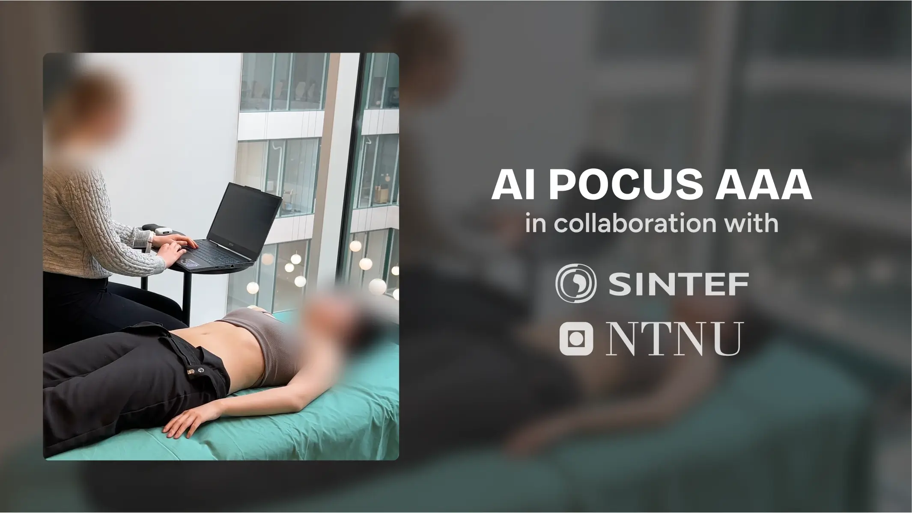
-
Client
SINTEF Digital
-
Role
UX designer
-
Team
1 designer
2 developers
2 PMs -
My contributions
User research, Interaction design, Experience design, Project management
Background
Doctors cannot diagnose what they can't see
A ruptured abdominal aortic aneurysm (AAA) can be fatal, but is easily prevented if found early, using a simple ultrasound procedure. The procedure involves finding the aorta, and measuring the diameter at the thickest.
Most doctors don't know how to use ultrasound, so SINTEF is developing an AI to make it more accessible for beginners. I designed the interface and helped guide the development of this tool for my masters project.
Approach
Two prototypes: Live testing and ideating
Doctors wanted a fully automated tool to use in their practice, but approving the AI for clinical use was beyond Sintef's scope. To bridge this gap, I created two prototypes:
- A testable MVP the dev team could realistically build and use in SINTEF's trials.
- A video prototype, exploring the ideal scenario with features doctors actually needed.
This decision kept the team focused, and gave us richer feedback than any single prototype would have.
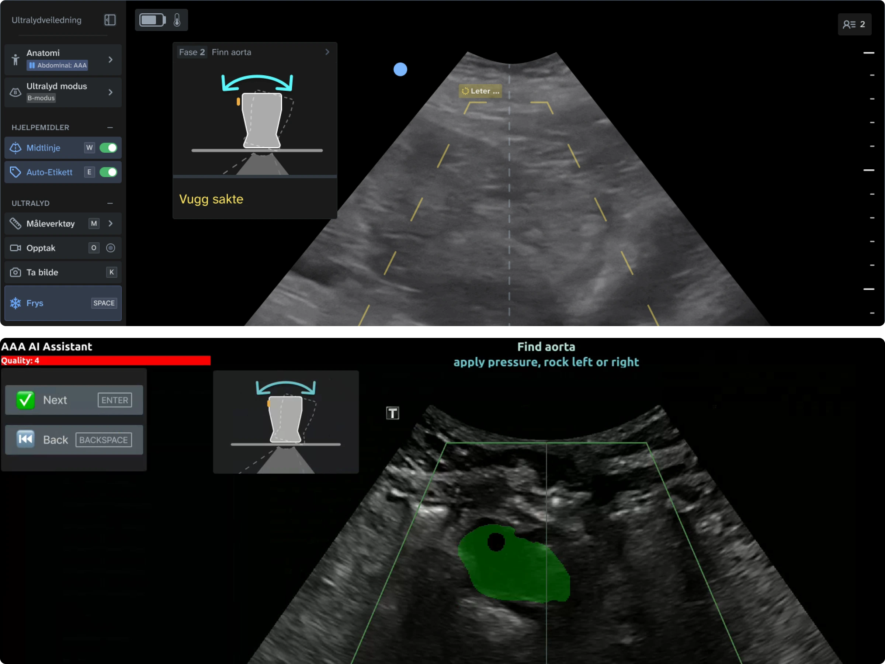
Top: Ideal prototype, showing complete UI with additional features. Bottom: MVP used for testing the AI live.
Challenge
Lack of confidence and trust
I came in with no ultrasound knowledge, like the target users. I observed experts, practised on colleagues, and briefly wondered where the challenge was. Until I talked with GPs. For them, a misdiagnosis can have severe consequences, and some feel that they can't afford to experiment. One doctor stated that mental barriers was the main reason they were hesitant. Beyond simply teaching the procedure, I realised the purpose of the tool should be help them feel confident in their decisions.
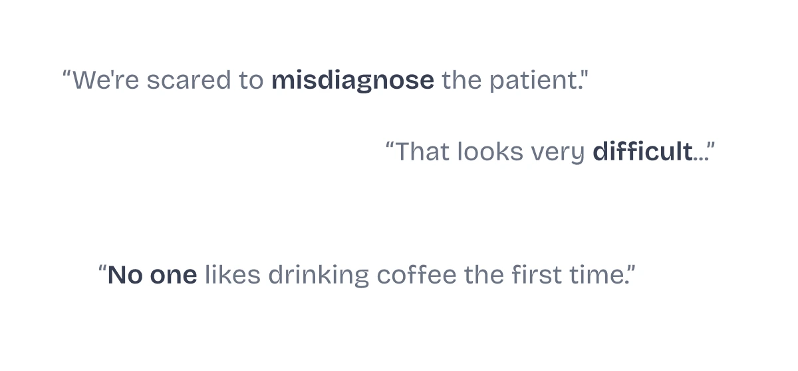
Quotes from doctors during interviews and workshops.
Testing early
Start building before the AI is ready
An AI still in training is unpredictable. Early on, we didn't know its exact capabilities, or how it would behave. Instead of waiting, I simulated its behaviour through role-plays, storyboards and early prototypes. Gathered insight was fed back into the AI's development. After seeing it failing to identify smaller, healthier aortas, we prioritised training it on more varied patient data.
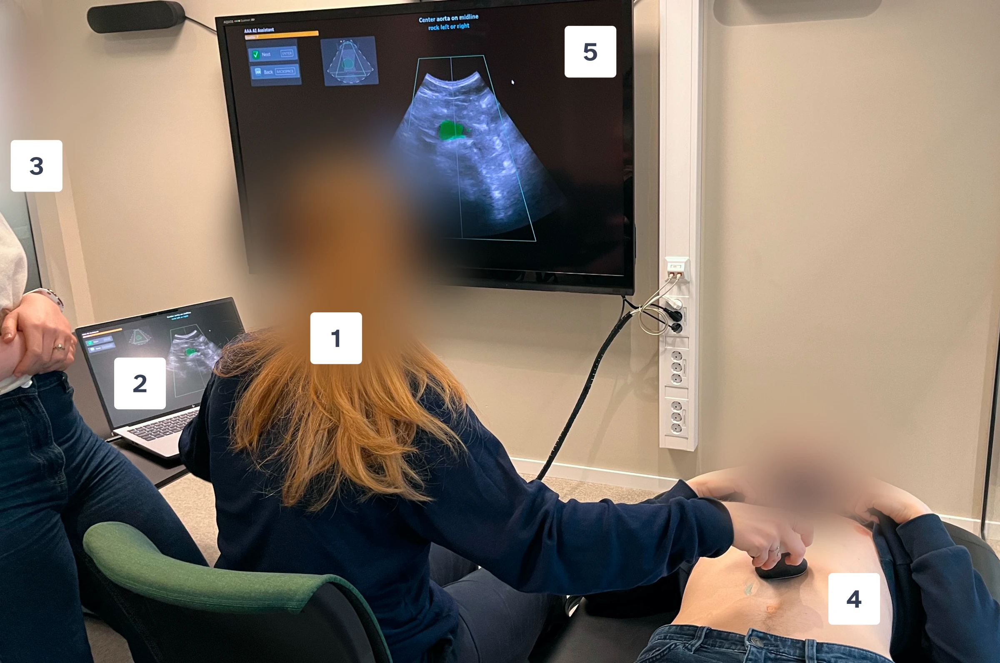
Picture from one of the early user tests. The user (1). On the user's left side, laptop with prototype, accompanied by a developer (3) simulating the AI. On the user's right side, the "patient" (4).
Final result
An AI-guided workflow for AAA examinations
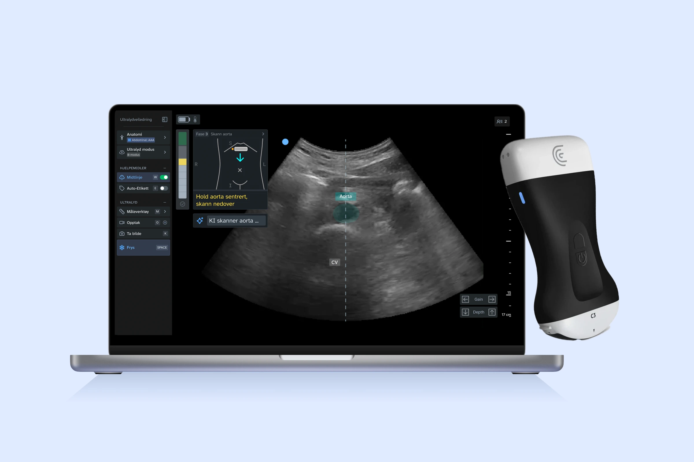
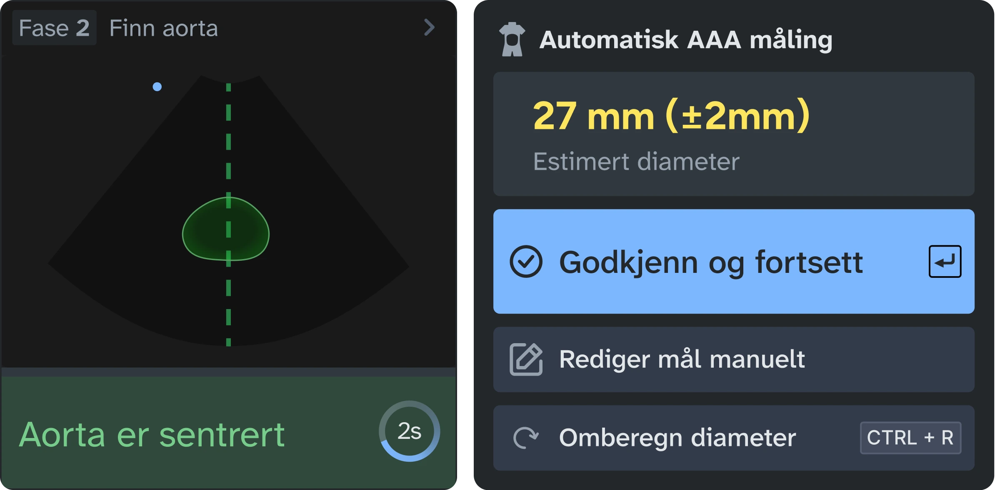
Step 1: Finding aorta
Tilt the probe. Aorta will be highlighted by AI when it enters the image.
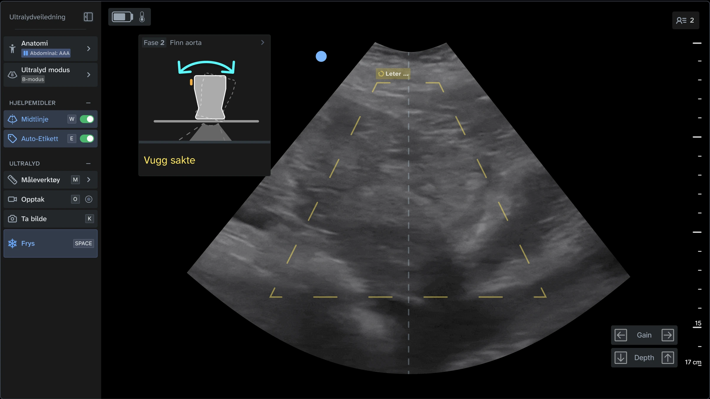
Step 2: Scanning
Follow the aorta down, while the AI continuously measures the diameter.
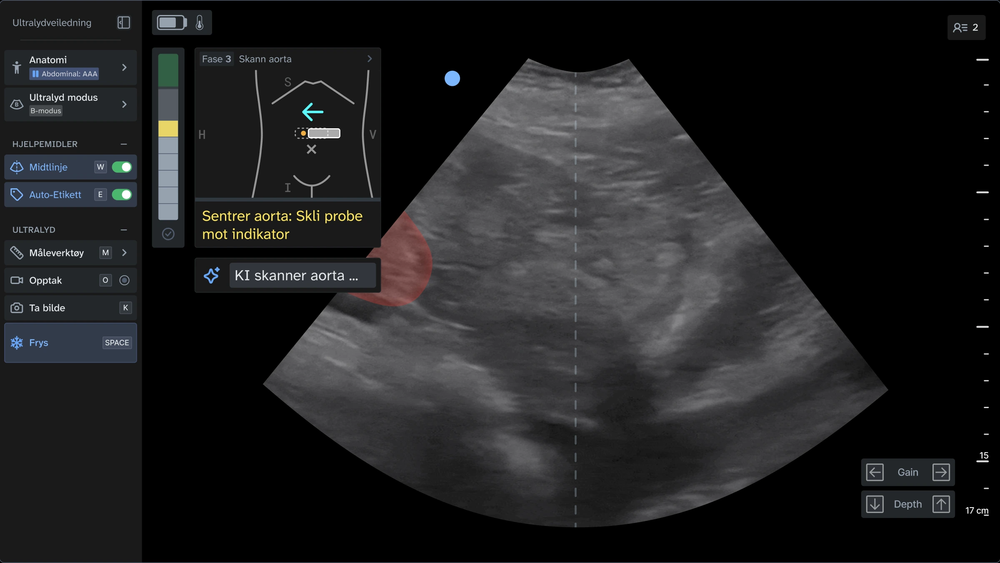
Step 3: Measuring
Upon freezing the image, AI automatically measures the diameter. Procedure complete.
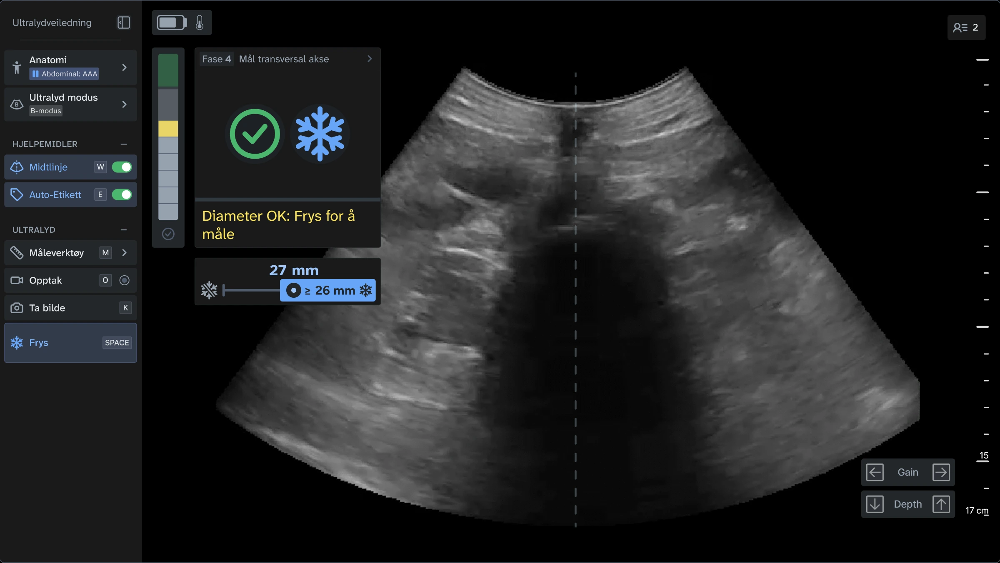
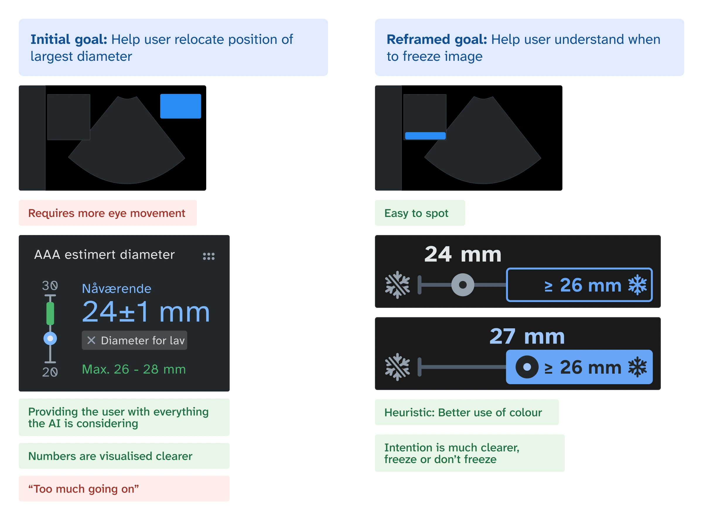
Final testing
Live prototype testing with 12 doctors
The team and I travelled rural Norway, visiting 8 different doctor's offices. I interviewed and tested with 12 end users, and 3 other stakeholders.
Feedback indicated that more steps should be automated, instead of asking for user input. All users managed to complete the procedure with guidance, and repetition improved users' confidence drastically. Compared to when they tried on their own, several felt unsure if it was successful. Many expressed enthusiasm for the guidance, saying "Really easy with AI".
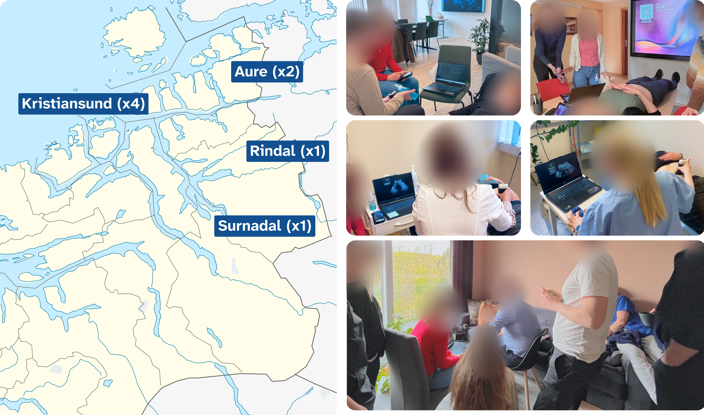
Reflecting
This project made me a flexible collaborator
Involving the developers in design decisions early made them invested in the outcome. The design stopped being mine and became a shared effort.
Testing with medical professionals changed how I prepare. Their time is limited, so every session had to count.
I learned to adapt my methods. The ideal testing setup wasn't always available, so I found ways to get value from imperfect conditions instead of waiting for perfect ones.
The tool is being actively used in SINTEF's 2026 studies. At handover, I wrote a structured summary of the final testing, with recommendations for future improvements, to the doctorate student continuing the work.
Links
Watch the full video:
Download the full report: